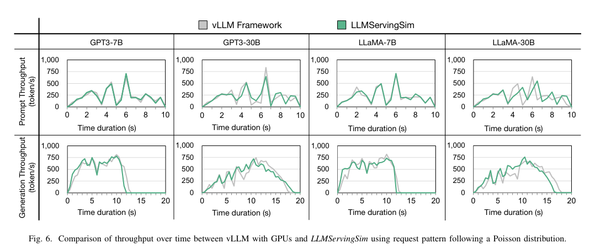
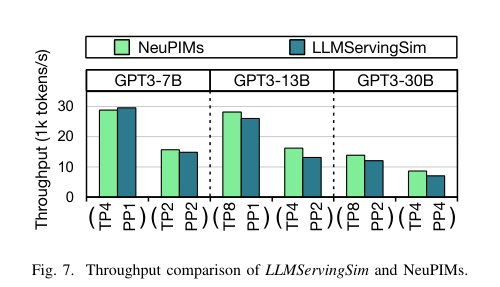
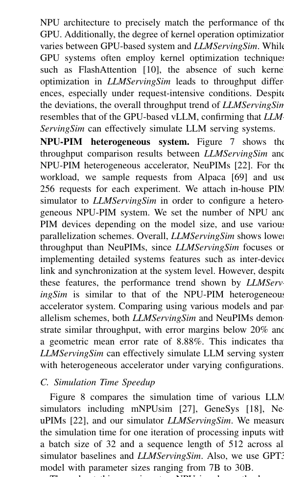
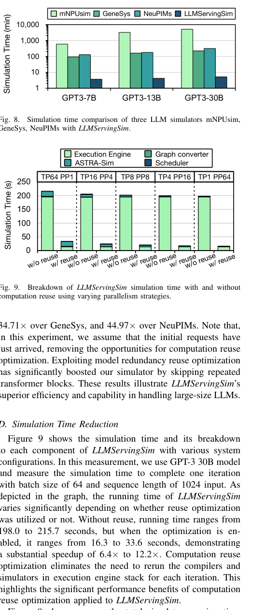
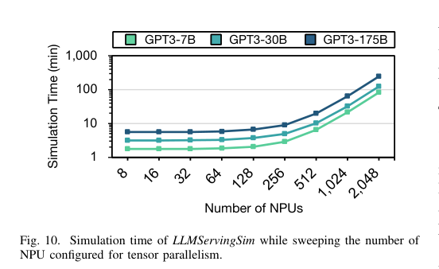

本报告由大模型自动生成，可能存在理解、归纳或数据转述错误；请以原论文为准。 LLMServingSim: A HW/SW Co-Simulation Infrastructure for LLM Inference Serving at ScaleJaehong Cho, Minsu Kim, Hyunmin Choi, Guseul Heo, Jongse Park · 2024 IEEE International Symposium on Workload Characterization (IISWC) · 2024 · 原文 · PDF 报告模型：gemini-3.1-pro-preview / high 当前日期是 2026-10-03。以下是对《LLMServingSim: A HW/SW Co-Simulation Infrastructure for LLM Inference Serving at Scale》论文的详细解析。 一、 引言与问题背景随着大规模语言模型（Large Language Model, 简称 LLM）在现实应用中的普及，将推理任务卸载到云端的多租户“推理服务系统”（Inference Serving Systems）已成为主流。这类系统通常由数百个节点组成，每个节点配备多个高性能人工智能加速器（如 GPU 或专用的 NPU）。在探究如何提高这类集群的吞吐量和降低延迟时，研究人员面临着一个严峻的基础设施缺口：目前缺乏一种能够在集群规模上，快速且准确地联合仿真“底层异构硬件”与“顶层服务系统软件”的工具。 为了帮助理解本文的研究层级，这里补充一下通用系统背景：一个规模化的 AI 推理集群由多个主机（Host CPU）和加速器节点组成，节点之间通过高带宽互联网络（如 PCIe 或 CXL）通信。在单个节点内部，加速器（例如包含多个计算核心的 NPU 芯片或集成了计算单元的 PIM 内存）负责执行具体的矩阵运算。本文讨论的层级是宏观的系统级与节点级，即探讨如何将不同的神经网络算子（Operator）映射并调度到由多种加速器组成的网络中，以及分析内存容量限制和网络数据传输如何影响整体吞吐量；本文未涉及芯片底层的物理布局、布线、时序或散热等电子设计自动化（EDA）层面的探讨。 现有仿真工具主要存在两个致命局限。第一，像 ASTRA-sim 这样的主流分布式 AI 系统仿真器主要针对模型训练设计。训练过程包含数百万次结构“完全相同”的计算迭代，而在 LLM 推理服务中，模型是自回归（Autoregressive）地逐个生成词元的，这意味着每一个推理步骤（迭代）处理的输入长度、批处理（Batch）组成和内存状态都在动态变化，ASTRA-sim 无法直接处理这种动态性。第二，现有的单节点硬件仿真器（如 mNPUsim、GeneSys）虽然能进行周期精确的仿真，但速度极慢。由于没有利用 LLM 架构中存在的大量重复性算法特征，它们在模拟哪怕一次推理迭代时都需要耗费数小时，将其扩展到包含成百上千次迭代的服务系统评估中是几乎不可行的。 为了解决这些问题，本文作者提出了 LLMServingSim，这是一个基于 ASTRA-sim 构建的软硬件协同仿真基础设施。它引入了迭代级（Iteration-level）的调度机制，利用了 LLM 解码器块的计算冗余来大幅缩短仿真时间，并提供了一个灵活的插件框架，支持模拟由 CPU、NPU 以及 PIM 等组成的异构集群。 二、 背景知识与核心概念定义在深入探讨 LLMServingSim 的设计之前，需要先明确本文涉及的几个核心概念。 1. LLM 模型架构与推理阶段 现代 LLM 主要采用基于解码器的 Transformer 架构。该架构由一个嵌入层（Embedding layer）、多个重复的 Transformer 块（Transformer blocks）和一个语言建模头（LM Head）组成。每个 Transformer 块内部又包含查询-键-值生成（QKV Generation）、多头注意力机制（Multi-head Attention，包含 Score 和 Attend 算子）以及前馈神经网络（Feed-Forward Networks, FFN）。 在推理时，模型运行分为两个阶段：
2. KV 缓存（KV Cache）与内存管理 在生成阶段，为了避免每次迭代都重新计算历史词元的注意力，系统会将之前计算过的 Key 和 Value 张量缓存在加速器的本地内存中，这被称为 KV 缓存。由于每个请求的每个词元都需要保存这些信息，KV 缓存会消耗巨大的内存容量，成为限制系统并行度（Batch Size）的硬件物理约束。为了解决这个问题，本文引入了 vLLM 系统中提出的**分页内存管理（Paged Attention）**概念（这是一种软件设计选择），即像操作系统管理虚拟内存一样，将 KV 缓存划分为固定大小的页进行按需分配，从而减少内存碎片。 3. 迭代级调度（Iteration-level Scheduling） 传统的批处理必须等待一个 Batch 中所有请求都生成完毕后才能处理下一批，这会导致硬件利用率低下。本文采用 Orca 系统中提出的迭代级调度（软件策略）：在模型每生成一个词元（即一次迭代）后，调度器会动态移除已完成的请求，并加入新的请求，重新组合 Batch。 4. 异构加速器（Heterogeneous Accelerators） 由于 LLM 推理同时包含计算密集型和访存密集型任务，单一硬件难以兼顾。本文讨论的异构系统包含两类硬件：
三、 LLMServingSim 架构与方法LLMServingSim 的核心设计思想是在保证系统级行为模拟准确性的前提下，通过牺牲部分底层物理细节，换取仿真速度的数量级提升。整个仿真器由四个相互作用的核心组件构成：调度器（Scheduler）、执行引擎栈（Execution Engine Stack）、图转换器（Graph Converter）和底层系统仿真器 ASTRA-sim。 在每一轮词元生成迭代中，数据流如下： 首先，调度器接收用户请求，根据当前加速器的剩余内存容量（评估 KV 缓存页是否足够）挑选合适的请求组装成批次（Batch）。随后，调度器根据设定的并行策略和硬件拓扑，生成将不同算子分配给特定硬件的模拟计划。 接着，执行引擎栈接管任务。这是一个可插拔的接口层，内部包含了针对不同硬件的编译器和周期精确仿真器（例如用于模拟 NPU 的 GeneSys）。各个引擎根据模拟计划，对负责的算子进行编译和仿真，并输出包含延迟信息的执行轨迹（Trace）。在体系结构与 EDA 的跨层接口方面，执行引擎向系统级仿真传递的量是算子级别的执行延迟和轨迹信息，目标是评估系统级吞吐量和延迟，约束是内存容量和网络带宽。其建模假设是底层硬件引擎的单次算子仿真结果是准确的，信息损失在于忽略了芯片底层的物理布局、布线、时序、功耗或散热等 EDA 层面的物理细节。如果在同一种硬件内存在多个可以并行的算子，执行引擎内部的算子调度器会基于贪心启发式算法，决定这些算子的执行顺序，以最大化硬件利用率。 然后，图转换器读取这些轨迹，并根据系统设定的并行策略（例如张量并行、流水线并行）将其重构为一张系统级的执行图（Execution Graph，采用 Chakra 图格式）。图中嵌入了算子将要执行的具体节点 ID，并针对跨池（如 NPU 池到 PIM 池）的中间结果交换插入了数据传输算子。 最后，这张执行图被输入给 ASTRA-sim。ASTRA-sim 负责模拟宏观网络拓扑（例如节点间的 CXL 链路）、通信带宽限制和数据同步延迟。ASTRA-sim 运行完毕后，将系统级耗时结果返回给调度器，系统时钟推进，进入下一次自回归迭代。 在算法层面，本文通过“算法 1（Operator Mapping and Scheduling）”定义了调度器生成执行图的核心逻辑。在此我们按顺序明确该算法的符号定义：
在算法流程中，首先利用 为了解决仿真速度过慢的问题，作者引入了两项关键的软件仿真优化选择：
此外，LLMServingSim 通过引入页面驱逐与重载机制来弥补 ASTRA-sim 在物理内存约束建模上的不足。当内存不足以容纳新生成的 KV 缓存时，调度器会触发换页策略，图转换器便会在执行图中强制插入内存存储（Store）或加载（Load）算子，并赋予它们相应的总线传输延迟。 四、 实验评估与分析作者搭建了包括均质系统（只包含 NPU，基准对标配备 RTX 3090 GPU 的 vLLM 真实系统）和异构系统（NPU 与 PIM 混合，基准对标 NeuPIMs 仿真器）在内的环境进行评估。 在仿真准确性方面，正如图 6所示，作者对比了 LLMServingSim 与基于 GPU 的真实 vLLM 系统在使用泊松分布生成动态请求流时的吞吐量变化趋势。图 6 清晰地证明，在初始阶段（Prefill），仿真器的吞吐量波峰波谷与真实系统高度一致，验证了本文的迭代级调度和分页内存模拟在宏观上是准确的。在生成阶段，虽然总体趋势吻合，但仿真系统的绝对吞吐量偏低（误差低于 14.7%），作者解释这是因为真实的 GPU 系统软件栈（如 FlashAttention）包含深度内核级优化，而本文的 NPU 仿真模块并没有实现这些内核优化。同样，在与 NeuPIMs 系统的对比中（图 7），两者在不同并行策略下的吞吐量表现出高度一致性，几何平均误差仅为 8.88%。   在仿真速度方面，传统工具面临计算瓶颈，而 LLMServingSim 展现了绝对优势。正如图 8所示，在模拟单次迭代时，LLMServingSim 的速度比传统的 mNPUsim 快了惊人的 490.98 倍，比 NeuPIMs 快了 44.97 倍。为了进一步说明这种加速的来源，图 9展示了开启“计算结果缓存”（Computation Reuse）前后的耗时对比：开启复用后，原本 198.0 至 215.7 秒的单次迭代仿真时间骤降至 16.3 至 33.6 秒（实现了 6.4 倍至 12.2 倍的加速）。由于大模型的生成通常需要成百上千次迭代，这种优化是仿真器能在可行时间内完成系统级评估的重要保障。   在系统可扩展性方面，作者在图 10中展示了随着 NPU 数量从 8 增加到 2048 个（用于模拟高达 175B 参数的模型），仿真所需时间仅温和增长。在最极端的 2048 个 NPU 节点配置下，模拟一次迭代仅需 4.13 小时，这证明图转换器和 ASTRA-sim 能够有效管理超大规模的节点协调和通信模拟。  五、 结论与主线总结贯穿本文的主线是：LLM 推理服务的爆发式增长迫切需要探索包含 NPU 和 PIM 等在内的异构集群架构，但业界缺乏一种既能捕捉大模型自回归“迭代式”动态访存特征，又能在成百上千个节点的规模下保持快速仿真的系统级工具。 ASTRA-sim 等工具适合静态的分布式训练，而传统硬件周期精确仿真器又过于缓慢。 LLMServingSim 这一基础设施正是为了填补这一鸿沟而诞生的。它通过巧妙的抽象：将底层算子仿真下放给可插拔的硬件引擎，同时在宏观调度层拦截并利用了 LLM 特有的算法特征（如 Transformer 块的重复性、非注意力层的计算稳定性和 KV 缓存的分页特征），大幅剥离了冗余计算。 关键假设与局限性： 本文的有效性建立在“基础硬件引擎的单次算子仿真结果是准确的”这一假设之上。同时，该仿真器的结果不能被过度推广到评估软件底层的算子融合优化（例如，它无法反映类似 FlashAttention 这种改变了底层显存读写模式的软件创新带来的收益，因为这些必须在底层周期精确仿真器内部实现）。此外，尽管作者在讨论中声称通过 ONNX 模型可以支持 MoE（混合专家模型）或 RAG（检索增强生成）等新架构，但目前的具体调度和内存模型仍然主要是基于传统的稠密 Transformer 解码器结构硬编码的，处理稀疏动态路由时可能需要对调度器和 ASTRA-sim 的通信图生成机制进行额外改造。在跨层协同方面，本文只关注了架构层的吞吐、访存容量和网络延迟，并未涉及与底层 EDA 工具（如功耗、散热、芯片布局约束）的闭环反馈。 |